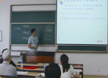
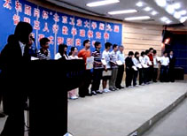

信息与科学专业介绍
学校名称：北京工业大学 专业名称：信息与计算科学（理学） 专业负责人：程曹宗 教授 1.专业介绍 信息与计算科学专业前身为应用数学专业，1989年更名为计算数学及其应用软件专业，1999年根据教育部颁布的专业目录更名为信息与计算科学专业，培养软件开发、计算数学和应用数学人才，是全国首批开设该专业的院校。该专业所依托的数学学科具有良好的学科基础，现有一级博士后流动站，概率论与数理统计二级博士学位授予权，一级学科硕士学位授予权，应用数学和概率论与数理统计为北京市重点建设学科。数学一级学科在全国同工科院校中排在前列，有较强的科学研究与应用开发的实力，已取得了一批优秀成果。有一支高水平的师资队伍，拥有良好的软硬件环境平台。通过211工程建设，在北京市的大力支持下，学校整体教学条件大为改善，也为该专业的人才培养提供了保障。 根据几十年教学实践，并结合社会对人才需求的变化，现已建立较为完善的培养方案：本专业培养具有良好的数学基础和计算机基础，掌握信息与计算科学的基本理论和方法，受到科学研究的初步训练，能运用所学知识和计算机解决某些实际问题，能在科技、教育和经济部门从事研究、教学、应用开发和管理工作的专门人才，主要是计算机应用软件的设计、研制和开发人才，适量的应用数学人才。本专业符合北京市经济发展战略和人才需求。近几年年均招生105人，毕业生10%读研深造，6%出国学习，42%从事IP业，12%从事电信业，3%在科研院所工作，6%在事业单位工作，9%从事金融业，4%其他领域就业，平均一次就业率92%。毕业生受到用人单位的欢迎与好评，认为基础扎实、逻辑思维能力强、学习能力强、踏实肯干、具有创新思维和创新意识、具有合作精神。在2003年教育部本科教学评估中，本专业培养质量得到专家组一致好评，为学校评为优级做出了积极的贡献。 2．建设理念 随着国家经济的发展，高等教育规模有了快速的发展。根据国家教育发展战略，高等教育的发展方向已从规模型发展转向提高办学效益和教学质量。本专业的建设就是适应新的形势对人才培养的要求，提高教学质量，使学生在知识、能力和素质几方面得到更好的发展，为北京市培养更多的信息与计算科学方面的高级专门人才。并通过理科专业的建设，对全面提高全校本科生培养质量起到促进作用。为此，以学科建设促进专业建设；提高教师学术水平和教育教学水平，构建一支结构合理、学科方向齐全、高水平的师资队伍；改革完善人才培养方案，加强课程建设尤其是专业基础课和主干专业课程的建设；加强教材和教学资料库建设；加强学生实践能力和创新能力的培养；着力提高学生培养质量，培养更多的基础扎实、具有创新能力的高级专业人才，把信息与计算科学专业建设成为市属高校特色鲜明的专门人才培养基地。 3．人才培养 培养计算机应用软件的设计、研制和开发人才和应用数学人才都需要坚实的数学基础知识和基本训练。此外，对软件开发人才，要学习计算机的基本知识和新知识，同时加强实践环节；对应用数学人才，要学习一系列应用数学专业课程，以拓宽专业知识面。使软件开发人才具有较高的数学素质，能在高层次上进行软件开发，并有较强的潜在发展能力；使应用数学人才数学基础扎实，专业知识面宽广并应用性强，同时具有较强的计算机能力。为此设置了三大课程模块：基础数学模块，包括分析类、代数类、几何类课程；信息学模块，包括计算机核心课程和实习等；应用数学模块，包括方程、计算、运筹、统计类课程等。在学习二年基础课后，学生可根据个人兴趣侧重选修相应模块的课程。 4．教学团队 数学学科现有专任教师73人，其中博士生导师10人、教授17人、副教授28人、具有博士学位的教师52人（占专任教师71%）。师资队伍年龄结构、学历结构、职称结构合理，中青年教师成为学术骨干。教师中20余人入选教育部和北京市各类人才培养计划或人才工程。先后担任国内一级学会理事长、常务理事、理事8人，二级学会常务理事6人。担任国内外学术期刊副主编、编委6人。 5．教学改革 不断加强课程建设、教材建设、师资队伍建设等基础性工作，加强教育教学研究和教学改革。自2004年起，率先实行了青年教师助课辅导制度，40岁以下的青年教师进行为期一年的教学培训，验收合格后再担任主讲任务。多年来重要的基础课和专业课都是由教授讲授，数学分析等课程实行了习题课小班讲授，每一个小班配备一名青年教师辅导。每门课程都建立了课程组，至少由二名具有高级职称人员组成。所有高级职称人员均为本科生授课，并积极从事课程建设、教材建设和教育教学研究。在申报各级教育教学研究立项、教育教学成果评奖、优秀多媒体课件评奖、优秀教材评奖、优秀教学质量评奖和青年教师教学基本功大赛等活动中都取得了很好成绩，名列学校前茅。近三年编写出版各类教材和教学辅导用书20余部，其中3本被评为北京市精品教材，获国家级精品课程1门和北京市精品课程3门。概率论与数理统计教学团队2008年被评为北京市优秀教学团队。 为了科学决策和教学质量实时监控，成立了教学指导委员会和教学质量督导组。教学指导委员会负责教学上重要问题的决策，如专业设置、培养计划的制订、课程设置、青年教师教学培训与验收等。教学质量督导组负责日常的教学质量监控。近几年我们不断探索和改革考试方式和学习效果的评价体系，使之更加符合教学大纲的要求，客观地反映学生的实际水平，使评价标准符合我校实际、科学合理。 6．教学资源 数学学科拥有良好的软硬件环境平台。拥有一个大型数学实验室和3个小型实验室，设备总值415万。大实验室245m2，配备有160多台高性能计算机、并行计算机群、多媒体演示系统、数学和计算软件，可同时容纳一个年级学生的上机实习，满足学生数学实验、课程设计、数学计算和数学建模的需要，是一个设备先进的专业实验室。实验室配有专职人员4人，由一名具有博士学位的中年副教授担任主任，一名高级实验师和2名中级职称人员组成，另有多名专业教师担任实验课、课程设计和上机实习的指导教师。实验室实行全天开放，规范管理，保证学生学习的需要和实验课教学质量。同时学校也设有大型计算机中心，可供学生实习。学校图书馆和数理分馆，专业书籍、期刊和电子资源非常丰富。另外，与一些公司和工程单位有广泛的交流与合作基础，可为学生毕业设计和实习提供条件。 7．实践教学实践教学包括基础工艺实习、生产技术实践、基础实验、专业实验、课程设计、课程实习、毕业设计、公益劳动和军训等多种形式，合计学时约占培养计划总学时的四分之一。不同时期有不同的实践教学形式与教学目的，与相关课程进度谐调，构成相互联系、逐步递进的科学体系。实践教学注重培养学生的实际知识、技能、能力和科学素养，服务于专业整体培养的总目标。同时重视学生的课外科技活动，如开展“智慧三人行”数学建模竞赛等，培养学生运用知识的能力、创新能力和合作精神。配备经验丰富的教师进行指导。近几年在全国大学生数学建模和北京市大学生数学竞赛中获得奖项40余项。 |
|  |  | |
| 青年教师助课培训验收 | “智慧三人行”数学建模颁奖仪式 |